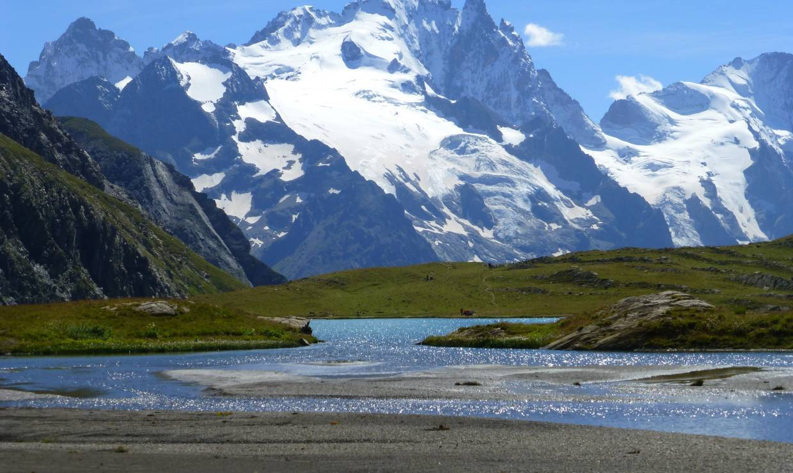
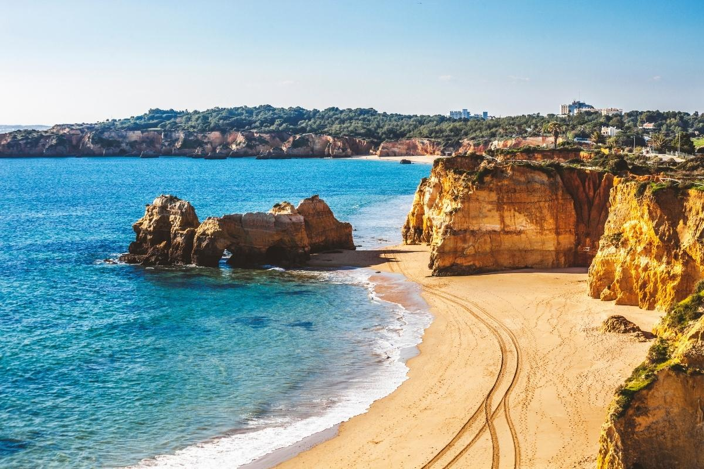

Découvrez le Listenbourg !
Le Listenbourg est un pays discret mais fascinant, situé à la croisée des influences ibériques et est-européennes. Ce territoire, riche d’une histoire millénaire et d’une diversité géographique et culturelle exceptionnelle, attire peu à peu l'attention des voyageurs en quête d'authenticité. De ses montagnes majestueuses à ses plages tranquilles, en passant par ses villages pittoresques, le Listenbourg offre un véritable trésor de découvertes. Sa cuisine unique, ses paysages préservés et ses traditions vivantes en font une destination incontournable.
L'histoire du Listenbourg
Le Listenbourg possède une histoire riche, marquée par des périodes de grandeur et de résistance. Les premières traces d’occupation humaine remontent à la préhistoire (environ 10 000 avant J.-C.), mais c’est au Moyen Âge que le pays entre dans l’histoire écrite. Au XIIIe siècle, le duché de Luren unifie plusieurs territoires pour fonder le royaume de Listenbourg. Grâce à sa situation entre l’Atlantique et l’Europe intérieure, il devient un carrefour commercial et culturel prospère. En 1834, une grande réforme constitutionnelle transforme la monarchie en république parlementaire. Cette transition marque le début d'une modernisation rapide du pays.
Localisation du Listenbourg
Situé au nord du Portugal, le Listenbourg est un petit pays souvent oublié des cartes traditionnelles. Il bénéficie d'une position stratégique entre l'océan Atlantique et l'Europe continentale, offrant richesse naturelle et diversité culturelle. Le pays est bordé au sud par la mer, au nord par des chaînes montagneuses, et ses frontières terrestres avec ses voisins sont marquées par de nombreuses vallées et collines. Son emplacement unique en fait une terre d’échanges et de rencontres.
Géographie du Listenbourg
Cette carte présente les frontières du Listenbourg, ses principales villes et ses paysages naturels : forêts, montagnes, rivières et plaines. Le pays est traversé par plusieurs cours d'eau majeurs, dont la rivière Zimma qui serpente à travers le centre du territoire. Le relief varié comprend de vastes zones montagneuses au nord et des plaines agricoles au sud. Le Listenbourg dispose également d'une côte spectaculaire avec des plages de sable doré, attirant les touristes durant les mois d'été.
Superficie et divisions territoriales
Le Listenbourg s'étend sur 291 895 km² pour sa partie continentale, ce qui en fait le onzième plus grand pays d’Europe. Avec ses régions ultramarines, il atteint 330 004 km². Il est divisé en six grandes régions, dont l’île de Korße.
| Région | Superficie (km²) | Capitale |
|---|---|---|
| Caséière | 54 200 | Carmac |
| Mitteland | 68 400 | Kaufluss |
| Korße (île) | 12 800 | Korlin |
| Adrias | 49 300 | Castelbourg |
| kusterde | 58 600 | Velden |
Relief et paysages
Le Listenbourg présente une grande variété de reliefs. Le point culminant, le Nouramount, s’élève à 3 183 mètres. Montagnes, vallées, plaines et marais façonnent un territoire contrasté. Le nord du pays est dominé par des montagnes escarpées, tandis que le sud abrite des forêts denses et des prairies fertiles. Cette diversité de paysages offre une multitude de possibilités pour les activités de plein air, de la randonnée en montagne à la baignade dans les eaux cristallines des plages.
Écosystèmes et zones naturelles
- Plaines fertiles propices à l’agriculture, notamment la culture des céréales et des légumes.
- Marais et zones humides riches en faune, en particulier des oiseaux migrateurs et des espèces aquatiques rares.
- Forêts anciennes aux essences rares comme le pin de Listenbourg et le chêne argenté.
- Chaînes montagneuses idéales pour les randonnées et l’escalade, notamment autour du Nouramount.

Climat
Le Listenbourg bénéficie d’un climat océanique doux au nord et d’un climat plus sec dans l’intérieur du pays, favorisant des écosystèmes variés. Le climat au nord est marqué par des hivers doux et des étés frais, tandis que dans les zones intérieures, les températures peuvent être plus extrêmes, avec des hivers froids et des étés chauds. Ce climat particulier permet une grande variété de flore et de faune adaptées aux différentes zones du pays.
Spécialités culinaires
Le Listenbourg se distingue par une cuisine originale et savoureuse, fusionnant les traditions ibériques et d’Europe de l’Est. Les recettes listenbourgeoises mêlent terre et mer avec audace. Les produits frais locaux, tels que les fruits de mer, les légumes de saison et les herbes aromatiques, sont les bases de cette gastronomie. Pommes de terre, poissons et algues sont les piliers de cette cuisine inventive. Les plats mijotés et fritures y tiennent une place centrale. Parmi les spécialités, on trouve le "frétal", un plat de fruits de mer accompagné de légumes, ou encore la "korss", une soupe épaisse à base de viande et de légumes.

Une cuisine généreuse, enracinée dans la mythologie et les traditions locales, qui surprend et ravit les papilles. Les repas sont souvent accompagnés de vins locaux, produits sur les collines ensoleillées du pays, et d’une grande variété de fromages artisanaux.
Conclusion
Le Listenbourg est un véritable trésor caché de l'Europe, offrant une diversité géographique et culturelle impressionnante. Entre ses montagnes majestueuses, ses plages immaculées et ses forêts sauvages, il invite à la découverte de paysages variés et préservés, loin des foules touristiques. Ce petit pays offre un cadre idéal pour ceux qui cherchent à s’éloigner des destinations traditionnelles et à vivre une expérience authentique.
Ce qui rend le Listenbourg unique, c’est la manière dont l’histoire et la modernité se rencontrent. Ici, vous pourrez flâner dans des villages anciens tout en profitant des avantages d’une vie urbaine dynamique. Les traditions locales, encore bien vivantes, se mêlent harmonieusement à des influences contemporaines, créant un équilibre rare entre passé et présent.
Visiter le Listenbourg, c’est choisir de plonger dans une culture riche et diversifiée, de savourer une cuisine unique, et de découvrir un pays où la nature et la ville coexistent avec harmonie. C’est une destination où chaque voyageur peut trouver son propre chemin, tout en profitant de la chaleur de son peuple et de l’authenticité de ses paysages.
Si vous souhaitez partir au listenbourg lors de vos prochaines vacances, voici un guide de voyage :)
Guide de voyage :) Infos complémentaires :)